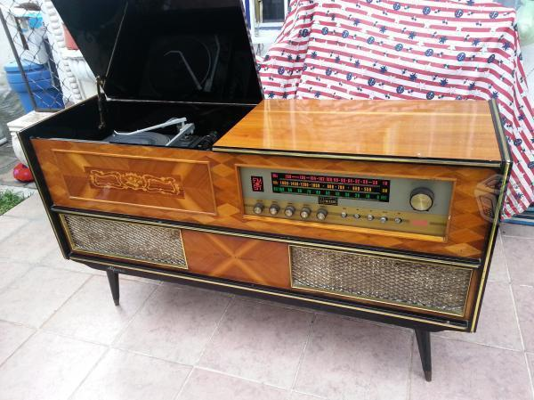
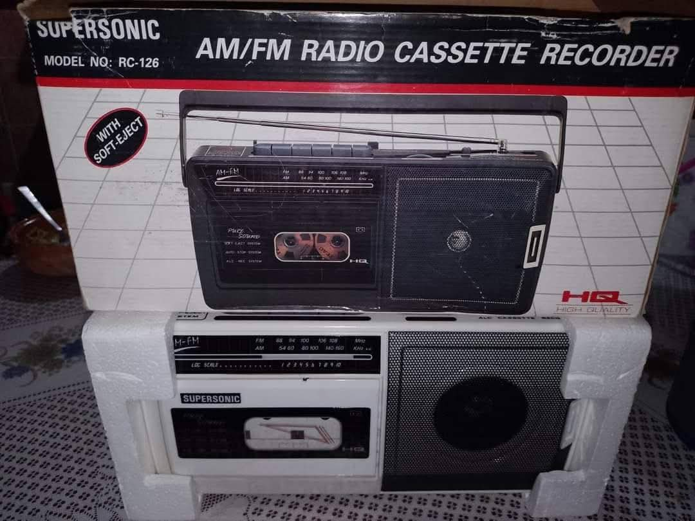
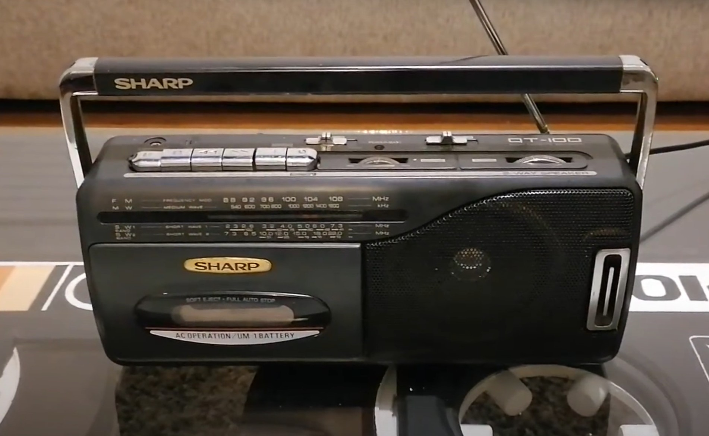

Mi música
17 de Agosto, 2025
Intentar recordar cosas que sucedieron antes de que cumpliera los 5 o 6 años es algo confuso pero
lo poco que puedo rescatar es eso. Me imagino que todos nos pasó, que nuestras primeras canciones
estaban determinadas por lo que se escuchaba en nuestro entorno, lo que provocó que se empezara a generar un
gusto por esa música.
Inicios
Las primeras canciones que recuerdo, son de poco antes de ingresar
al Kinder. Son recuerdos vagos y sin detalle, pero si me pongo a hacer memoria del contexto
en el que las escuchaba, puedo recordar algunas. Como por ejemplo las de
Mocedades y Julio Iglesias que le gustaban a Mamita, los Bee Gees y Roberto Carlos que escuchaba el Pollo,
Pá siempre ponía de los Solitarios, los Terrícolas, etc., Leti escuchaba
música de Mijares mientras limpiaba la casa, y Lucha ponía canciones de Flans 🤭
incluso recuerdo que nuestro abuelito David escuchaba tríos como los Dandy's, los Panchos, Los Aguilar, etc.
Y aunque no tengo recuerdos anteriores a eso, me han dicho que me gustaba mucho la
canción de "Pancho Lopez" con los Dinners, la de "Adiós amor" de Mocedades y algunas otras.
De las que sí me acuerdo que me gustaban mucho eran Live is Life - Opus, Ni tu ni nadie - Alaska y Dinarama, y algunas de Cri-cri,
Topo Gigio, Los Pitufos y Chabelo, jejeje.
Me gustaba mucho poner discos de vinilo en la consola de Mima, mis recuerdos de ese aparato son tan vívidos
que logré encontrar una foto en internet del modelo exacto de esa consola.

Grabadoras
No sé si tu recuerdes las grabadoras que teníamos. Me sorprende que desde los 6 o 7 años ya
manejabamos bien las grabadoras y los cassettes, hoy en día los niños no saben nada más allá del celular.
Hace unos días me propuse a buscar imagenes de nuestras grabadoras según lo que yo recordaba. Y encontré un par de fotos,
una de la mía y una de la tuya.


La de Petaca no me acuerdo de que marca era, pero creo recordar vagamemte que era Panasonic o Sony.
De lo unico que me acuerdo bien es que esa grabadora de Petaca se quemó el dia que casi se incendia el cuarto. 🤭